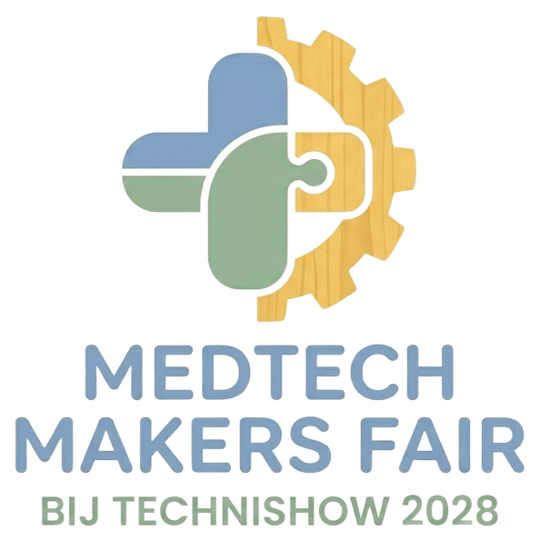

MedTech Makers Fair
An invite-only coalition of MedTech vendors and their suppliers, solving real patient-pathway problems together, building toward a hackathon and launch at TechniShow 2028.
Why this exists
The hard problems in a patient pathway rarely sit inside one product. They sit between systems, devices and suppliers, where no single vendor owns the whole picture. We bring the people who build those pieces into one room, around the same pathway, long before an event forces a deadline.
Who it is for
MedTech vendors and the suppliers around them: software, devices, components, data and integration partners that want to build things that work together in practice.
What members do
Work on pathways
Small working groups per selected patient pathway, each with a clear problem to solve.
Share capabilities
A member directory of what each organisation offers and needs, so the right partners find each other.
Meet on a rhythm
A fixed monthly call and quarterly in-person sessions, so progress is visible and steady.
Build together
Shared specifications and starter repositories, working toward a hackathon on synthetic data.
The road to 2028
- Oct to Dec 2026
Foundations
Charter, the first channel for members, a founding group of invited organisations, and the choice of the first pathways.
- 2027
Pathway working groups
Working groups get going, the capability directory takes shape, and the monthly and quarterly rhythm is established.
- Late 2027 to early 2028
Hackathon preparation
Synthetic datasets, starter repositories and launch planning.
- March 2028
Hackathon and launch at TechniShow
Members build and show what they made together. After that, the coalition decides on openness, governance and continuation.
Ground rules
- By invitation. Members share needs and capabilities, and some of that is commercially sensitive. A closed group builds trust.
- No patient data. Synthetic or de-identified data only. Nothing patient-identifiable is ever shared.
- Open specs. What members produce together is shared under an open licence.
- Independent. The coalition is neutral and is meant to outlive any single company.
If your organisation would like to take part, tell us who you are and which pathway interests you.
Request an invitationMedTech Makers Fair
Een coalitie op uitnodiging van MedTech-leveranciers en hun toeleveranciers, die samen echte problemen in patiëntpaden oplost en toewerkt naar een hackathon en lancering op TechniShow 2028.
Waarom dit bestaat
De lastige problemen in een patiëntpad zitten zelden binnen één product. Ze zitten tussen systemen, apparaten en leveranciers, waar geen enkele partij het hele plaatje overziet. Wij brengen de mensen die die onderdelen bouwen bij elkaar rond hetzelfde patiëntpad, ruim voordat een evenement een deadline afdwingt.
Voor wie
MedTech-leveranciers en de toeleveranciers eromheen: software, apparatuur, componenten, data en integratiepartners die dingen willen bouwen die in de praktijk samenwerken.
Wat deelnemers doen
Werken aan patiëntpaden
Kleine werkgroepen per gekozen patiëntpad, elk met een helder probleem om op te lossen.
Mogelijkheden delen
Een ledenoverzicht van wat elke organisatie biedt en zoekt, zodat de juiste partners elkaar vinden.
Op een vast ritme ontmoeten
Een vast maandelijks overleg en driemaandelijkse bijeenkomsten, zodat voortgang zichtbaar en gestaag is.
Samen bouwen
Gedeelde specificaties en startrepositories, op weg naar een hackathon met synthetische data.
De weg naar 2028
- Okt t/m dec 2026
Fundament
Handvest, het eerste kanaal voor deelnemers, een oprichtingsgroep van uitgenodigde organisaties en de keuze van de eerste patiëntpaden.
- 2027
Werkgroepen per patiëntpad
De werkgroepen komen op gang, het overzicht van mogelijkheden krijgt vorm en het maandelijkse en driemaandelijkse ritme staat.
- Eind 2027 tot begin 2028
Voorbereiding hackathon
Synthetische datasets, startrepositories en planning van de lancering.
- Maart 2028
Hackathon en lancering op TechniShow
Deelnemers bouwen en laten zien wat ze samen hebben gemaakt. Daarna besluit de coalitie over openheid, bestuur en voortzetting.
Spelregels
- Op uitnodiging. Deelnemers delen behoeften en mogelijkheden, en een deel daarvan is commercieel gevoelig. Een besloten groep schept vertrouwen.
- Geen patiëntgegevens. Alleen synthetische of gede-identificeerde data. Er worden nooit herleidbare patiëntgegevens gedeeld.
- Open specificaties. Wat deelnemers samen maken, wordt gedeeld onder een open licentie.
- Onafhankelijk. De coalitie is neutraal en bedoeld om langer te bestaan dan één enkel bedrijf.
Wilt u met uw organisatie meedoen? Laat ons weten wie u bent en welk patiëntpad u interesseert.
Uitnodiging aanvragen